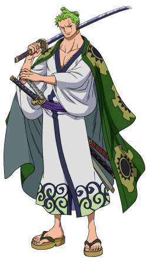

¡Bienvenido a "La Búsqueda del Sake de Zoro"! Sumérgete en un emocionante viaje a través de paisajes llenos de misterio y desafíos en nuestra cautivadora plataforma de juego. En esta aventura, te embarcarás en la búsqueda del legendario sake de Zoro, un tesoro perdido que aguarda a ser descubierto por aquellos lo suficientemente valientes para enfrentar los obstáculos que se interponen en su camino. Desde peligrosos laberintos hasta emocionantes acertijos, cada paso te acerca más al tesoro final. ¿Estás listo para aceptar el desafío y convertirte en el héroe de esta fascinante odisea? ¡Únete a la búsqueda y deja que la emoción te envuelva en "La Búsqueda del sake de Zoro"!
